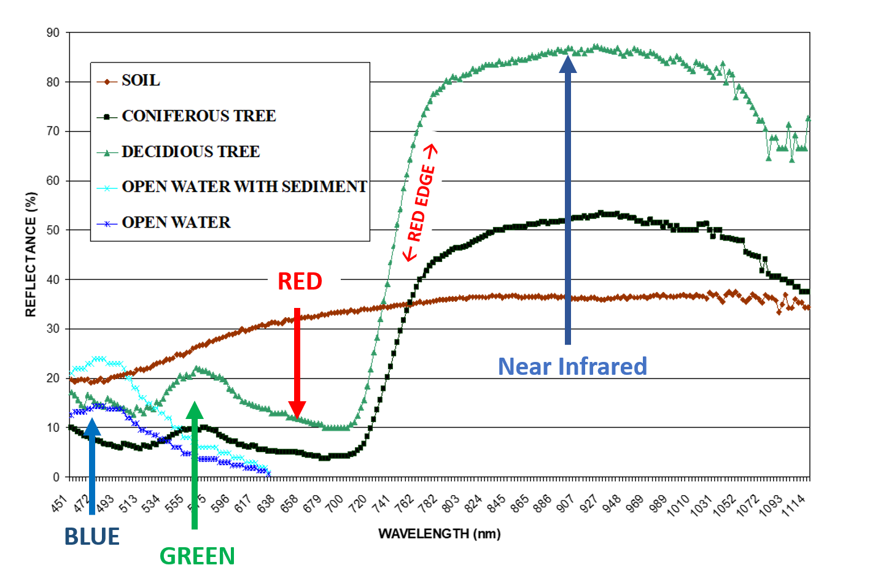
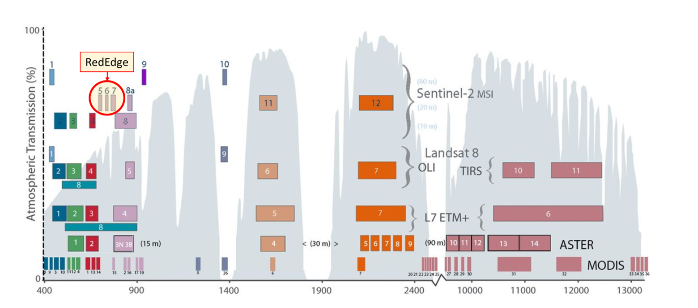
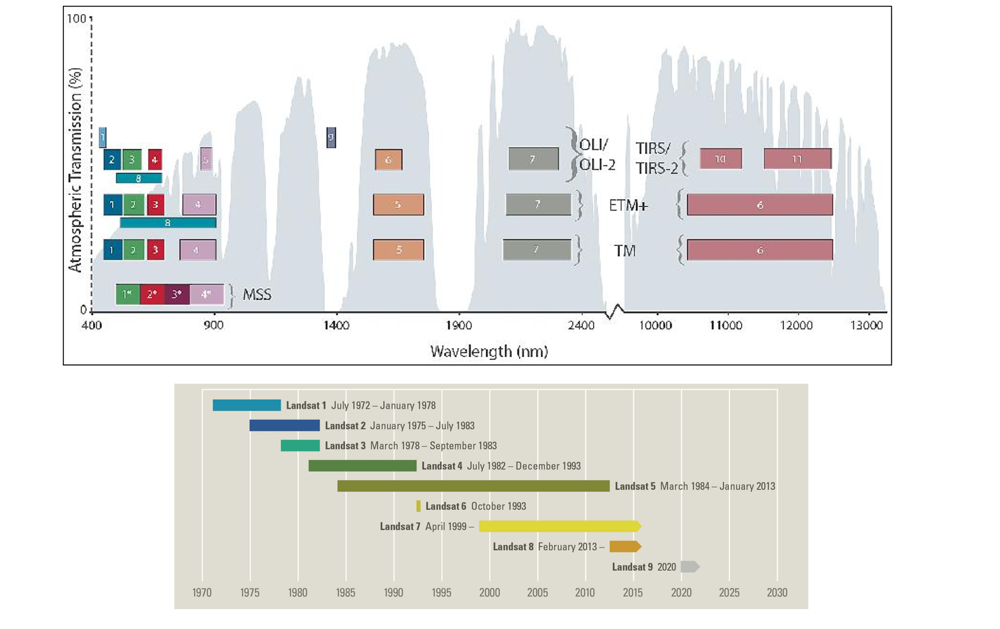
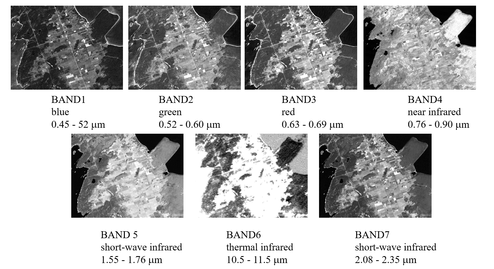

Remote Sensing and Image Analysis
Overview
This course introduces the basic interpretation and measurement of physical, biological, and cultural features from satellite and aerial imagery. Basic photogrammetry concepts will be examined and practiced in scale determination, height, and measurement. Other concepts introduced include understanding the electromagnetic spectrum, working with raster data, geometric correction, atmospheric correction, image classification techniques, and understanding how atmospheric conditions affect the quality of imagery.
Visible and Red Near Infrared Spectral Responses of Common Earth Targets
Temporal and spatial effects can affect the spectral response patterns of objects and have to be evaluated in image interpretation. At some wavelengths, sand reflects more energy than green vegetation but at other wavelengths it absorbs more (reflects less) than does the vegetation. In principle, we can recognize various kinds of surface materials and distinguish them from each other by these differences in reflectance
Commonly Employed Satellite Multispectral Sources For Earth Observation Mapping and Monitoring
- Landsat 7 and 8 (NASA/USGS)
- Sentinel 2A/2B (ESA)
- ASTER – (Advanced Spaceborne Thermal Emission and Reflection Radiometer) NASA, Japan's Ministry of Economy, Trade and Industry (METI)
- MODIS – (Moderate Resolution Imaging Spectroradiometer) - NASA
The Sensors and Spectral Bands On-Board the Various Landsat (1 - 8) Satellites (1972 – Present) 48 Years of Global Imagery!
The ASTER satellite sensor is one of the five state-of-the-art instrument sensor systems on-board the Terra satellite, launched on December 18, 1999 in a sun synchronous orbit. Joint project of U.S. NASA and Japan Ministry of Economy, Trade, and Industry
THE SEVEN BANDS OF LANDSAT THEMATIC MAPPER (TM) BRUCE PENISULA, ONTARIO
Note the near infrared response in the forested areas.
The standard false colour composite (R:BND4, G:BND3, B:BND2) variates the vegetation from rest of the features and shows spectral differences between deciduous and coniferous